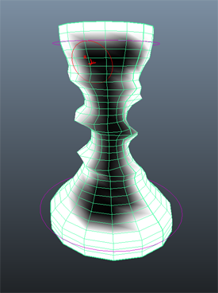

将非线性变形器应用到对象后，您可以绘制权重来调整变形器的效果。
绘制非线性权重贴图的步骤
- 选择通过非线性变形器变形的对象（“弯曲”(Bend)、“扩张”(Flare)、“正弦”(Sine)、“挤压”(Squash)、“扭曲”(Twist)或“波浪”(Wave)）。
- 选择“着色 > 对所有项目进行平滑着色处理”(Shading > Smooth Shade All)或按默认热键 5 以切换到平滑着色模式。
- 选择“变形 > (绘制权重)非线性”(Deform > (Paint Weights) Nonlinear) >
 。
。
- 在“绘制属性工具”(Paint Attributes Tool)的“绘制属性”(Paint Attributes)区域中，单击 deformerName .weights 按钮，然后选择“nonLinear > deformerName -weights”，其中 deformerName 是非线性变形器的名称）。
例如，对于挤压变形器，请选择“squash1.weights > nonLinear > squash1-weights”。
（这样可设置要绘制的属性的类型。）
- 绘制对象上的权重以调整变形器的应用方式。
默认情况下，对象曲面整体应用权重值 1（白色），因此非线性变形器完全应用于整个对象。您可以通过绘制更小的权重值或 0（黑色），减少或移除对象特定区域上的变形器影响。
